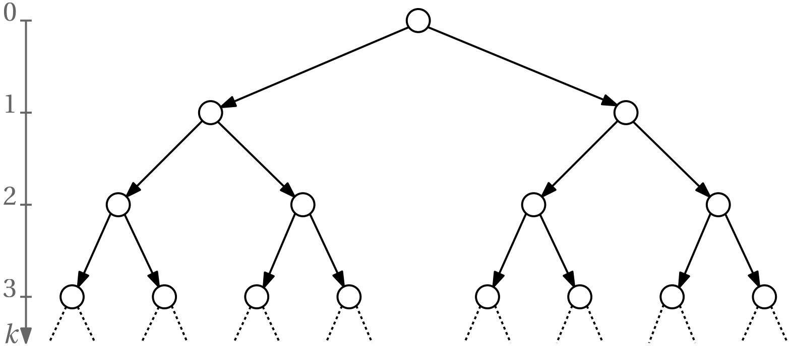

Temporal logics
It is natural to invoke the standard (propositional) logic when defining whatever requirements – we require that “if this and that conditions are satisfied, then yet another condition must not hold”, and so on.
However, the spectrum of requirements expressed with propositional logic is not rich enough when specifying requirements for discrete-event and hybrid systems whose states evolve causally in time. Temporal logics add some more expressiveness.
There are several temporal logics
Indeed, the plural is correct – there are several temporal logics.
Before listing the most common temporal logics, we introduce the key temporal operators that are going to be used together with logical operators for form temporal formulas.
Temporal operators
The name might be misleading here – the adjective temporal has nothing to do with time as measured by the wall clock. Their basic versions have been developed for discrete-event systems, and as state trajectories of these form sequencies, temporal operators refer to sequences.
Basic temporal operators that we are going to introduce can be extended so that they also refer to the wall-clock time. But we will only mention these extensions after introducing the basics.
Example 1 (Insufficiency of propositional logic to express requirements on a traffic light controller) Consider the state automaton for a controller for two traffic lights (but note that we intentionally simplify here a lot compared to real traffic light controllers). The state trajectory for each light is a sequence of color states \{\text{green}, \text{yellow}, \text{red}, \text{red-yellow}\} of the traffic light. We may want to impose a requirement such that \text{green} is never on at both lights at the same time. This we can easily express just with the standard logical operators, namely, \neg(\text{green}_1 \land \text{green}_2). But now consider that we require that sooner or later, \text{green} must be on for each light (to guarantee fairness). And that this must be true all the time, that is, \text{green} must come infinitely often. And, furthermore, that \text{red} cannot come imediately after its respective \text{green}.
Requirements like these cannot be expressed with standard logical operators such as \lnot, \land, \lor, \implies and \iff, and temporal operators must be introduced. Here they are.
| Symbol | Alternative symbol | Meaning |
|---|---|---|
| \mathbf{F} | \Diamond | Eventually (Finally) |
| \mathbf{G} | \Box | Globally (Always) |
| \mathbf{X} | \bigcirc | NeXt |
| \mathbf{U} | \sqcup (also \mathcal{U}) | Untill |
| \mathbf{R} | \sqcap (also \mathcal{R}) | Release |
| \mathbf{W} | \mathcal{W} | Weak Untill |
| \mathbf{M} | \mathcal{M} | Mighty (strong) Release |
We are going to explain their use while introducing our first temporal logic.
Linear temporal logic (LTL)
“Linear” refers to linearity in time (one after another, as opposed to branching). Consider a sequence of discrete states (aka state trajectory or path) x_0, x_1, x_2, \ldots of a given discrete-event or hybrid system that is initiated at some state x_0. Now, referring to the concept of a Labelled Transition System (LTS), each state is labelled by a some atomic proposition(s) that is (are) true in this state. For simplicity, say, there is just one such boolean label p(x). Instead of a sequence of states, of sequence of the values of the label function can be considered. Say, false, false, true, false, false … Graphically, we can represent this sequence as in Fig 1, where the filled circle corresponds to true.
We now consider some property of the whole discrete state trajectory expressed by a Boolean formula \phi (as such it evaluates to true or false).
How do we express such property formula \phi? In order to be able to express requirements on future states, \phi cannot be just a (proposional) logic formula, it must by a Linear Temporal Logic (LTL) formula. Here comes a formal definition (using recursion): \boxed{ \phi = \text{true} \, | \, p \, | \, \neg \phi_1 \, | \, \phi_1 \land \phi_2 \, | \, \phi_1 \lor \phi_2 \, | \, \bigcirc \phi_1 \, | \, \Diamond \phi_1 \, | \, \Box \phi_1 | \, \phi_1 \sqcup \phi_2, \, \phi_1 \sqcap \phi_2} where p is an atomic formula, and \phi_1 and \phi_2 are some LTL sub-formulas.
The trajectory will be identified by its initial x, we write that a state sequence initiated at the given discrete state x satisfies the formula as \boxed{ x \models \phi.}
It the initial state x does not determine the trajectory uniquely, the above is then interpreted as “for all trajectories initiated at x”.
Visualisation of some basic LTL formulas
| x \models \Box p | ●──→●──→●──→●──→●──→●──→●┄┄→ |
| x \models \Diamond p | ○──→○──→○──→○──→○──→●──→○┄┄→ |
| x \models \bigcirc p | ○──→●──→○──→○──→○──→○──→○┄┄→ |
| x \models p_1 \sqcup p_2 | ●──→●──→●──→■──→○──→○──→○┄┄→ |
| x \models p_1 \sqcap p_2 | ■──→■──→■──→■●──→○──→○──→○┄┄→ |
The last two examples (lines) use actually two atomic formulas p_1 and p_2, satisfaction of the former is visualized by a filled circle and the latter by a square, satisfaction of both by displaying both next to each other.
The difference between the Untill and Weak Untill is that for the former it is guaranteed that p_2 will eventually hold, while for the latter it is not. Similarly, the difference between Release and Mighty Release is that for the latter it is guaranteed that p_1 will eventually hold. In this regard, Mighty Release is dual to the (strong) Untill.
Redundancy in the enumerated temporal operators
There is some redundancy in the set of the temporal operators. For example, \Diamond \phi \equiv \text{true} \sqcup \phi. But there is no advantage in going with just the minimal set of temporal operators.
Example 2 (Some nontrivial LTL formulas) Here we consider some requirements expressed by notrivial LTL formulas.
| x\models \Box \neg p | ○──→○──→○──→○──→○──→○──→○┄┄→ |
| x \models \Box\Diamond p | ○──→○──→●──→○──→○──→●──→○┄┄→ |
| x \models \Diamond\Box p | ○──→○──→○──→○──→●──→●──→●┄┄→ |
| x \models \Diamond(p_1 \land \bigcirc\Diamond p_2) | ○──→○──→○──→○──→●──→○──→■┄┄→ |
We have mentioned at the beginning of this whole chapter on verification that a special kind of a requirement is that of a safety – something bad (say, a collision) must never happen. How do we express it using an LTL formula?
\Box \neg \text{collision}
We have also mentioned that alternatively this can be expressed as a invariance property – something good must always hold. How do we express it using an LTL formula?
Finally, another type of a common requirement is that of stability – something good must eventually happend and then it must hold forever. How do we express it using an LTL formula?
Property Specification Language (PSL)
Extension of the basic LTL tailored to hardware specification has been standardized as IEEE Standard for Property Specification Language (PSL). It adds some syntactic sugar and supports regular expressions.
Computation tree logic (CTL)
Another temporal logic is known as computation tree logic (CTL), it is sometimes known as branching temporal logic as it supports branching of state trajectories.
Obviously, instead of just a path graph, here we model the evolution of the system using a tree graph as in Fig 2.

In order to express requirements that must be satisfied by the tree, path quantifiers are needed. They are listed in Table 1.
| Symbol | Alternative symbol | Meaning |
|---|---|---|
| \mathbf{A} | \forall | Universal quantifier (for All) |
| \mathbf{E} | \exists | Existential quantifier (there Exists) |
Basic CTL formulas
| CTL formula | Graphical description | Interpretation |
|---|---|---|
| \forall \Box \phi | For all paths, \phi must hold always. | |
| \exists \Box \phi | There exists a path such that \phi always holds. | |
| \forall \Diamond \phi | For all paths, \phi must hold eventually. | |
| \exists \Diamond \phi | There exists a path such that \phi holds eventually. |
Temporal operators and path quantifiers always come in pairs when forming CTL formulas. For example, \forall \Diamond \Box \phi is not a valid CTL formula.
Example 3 (Some nontrivial CTL formulas and their interpretations)
| \forall \Box \neg \text{collision} | Safety Property | For all possible paths and all times, a collision will never occur. |
| \exists \Diamond \text{goal} | Liveness Property | There exists some path along which the system will eventually reach the goal state. |
| \forall \Box (\text{request} \implies \forall \Diamond \text{grant}) | Response Property (Cause-Effect) | For all possible paths and all times, if a request occurs, it is guaranteed that eventually a grant will follow. |
| \forall \Box (\neg (P_1 \land P_2)) | Mutual Exclusion Property | For all paths and times, the two processes P1 and P2 are not in their critical sections simultaneously. |
| \forall \Box (\text{enabled}\implies \forall\Diamond \text{executed}) | Fairness Property | If an action becomes enabled, it will be eventually executed, whichever path is taken. |
| \forall \Box (\text{condition} \implies \exists \Diamond (\exists \Box \text{safe})) | Nested Temporal Properties | For all states globally, if a condition holds, then there exists a path where eventually the system will enter a state from which it can always stay in safe states. |
| \forall \Box (\neg \text{error} \land (\exists \Diamond \text{goal})) | Combined Safety and Liveness | It is always true globally that the system avoids an error state and guarantees that a goal state can eventually be reached. |
CTL*
A combination of CTL and LTL is known as CTL*. In particular, the restriction that temporal operators and path quantifiers must come in pairs, which is imposed in CTL, is relaxed. The expressive power is best. But it comes at cost – verification of the formulas is more difficult.
Example 4 (Some examples of CTL*) Having state above, that \forall \Diamond \Box \phi is not a valid CTL formula, it is a valid CTL* formula. But \forall \Diamond \forall \Box \phi is a valid CTL formula. These two are not equivalent. Investigating the difference between the two shows that CTL* is indeed more expressive than CTL.
Probabilistic CTL (PCTL) and Continuous stochastic logic (CSL)
Probability added.
Timed computation tree logic (TCTL)
“Dense” time added to CTL. Used by UPPAAL.
Metric temporal logic (MTL) and Metric interval temporal logic (MITL)
Dense time added to LTL.
Example 5 \square (\mathrm{pressWalkButton} \Rightarrow \Diamond_{(1,10)} \mathrm{greenLight})
MITL does not allow singleton time intervals allowed by MTL. The motivation for this extension is that the verification of MTL requirements has been shown to be undecidable.
Signal temporal logic (STL)
Last but not least, STL is an extension of MITL towards continuous and hybrid systems. It also supports the continuous (aka dense) time, and furthermore it replaces the proposional logic with the predicate logic as it allows inequalities with real variables to play the role of atomic propositions. It is available for both continuous- and discrete-time systems.
Example 6 (Examples of STL formulas) \square \neg(x(t) > 10.0)
\square (x(t) \leq 5.5 \Rightarrow \Diamond_{(1,10)} \mathrm{greenLight}) \Diamond_{(0,60)}\square_{(0,20)} (x(t)\leq 5.5) \square\Diamond_{[0,10]} (\bm x(t) \in \mathcal A) \land \square\Diamond_{[0,10]} (\bm x(t) \in \mathcal B)
It allows combinations of surveillance (“visit regions A, B, and C every 10–60 s”), safety (“always between 5–25 s stay at least 1 m away from D”), and many others.
Robustness degree in STL
It turns out that if we only learn that the STL formula has been satisfied, it is not clear the corresponding constraint has been satisfied with quite some margin or just so so. This is compensated for by introducing a robustness degree. See the literature for more.
Monitoring, run-time verification
LTL and CTL logics (a bit less so CTL* and significantly less so MITL) lend themselves for some rigorous symbolic (fully exhaustive) verification (model checking) techniques with known complexities. In contrast, there are no such general techniques for STL. Instead, verification of STL formulas for the whole system must then be approached by evaluating them on individual trajectories (called monitoring) obtained either by simulation, running tests or obtaining operational data. The outcomes from several trajectories are then processesed statistically in Monte-Carlo style. This is known as simulation-based or run-time verification.